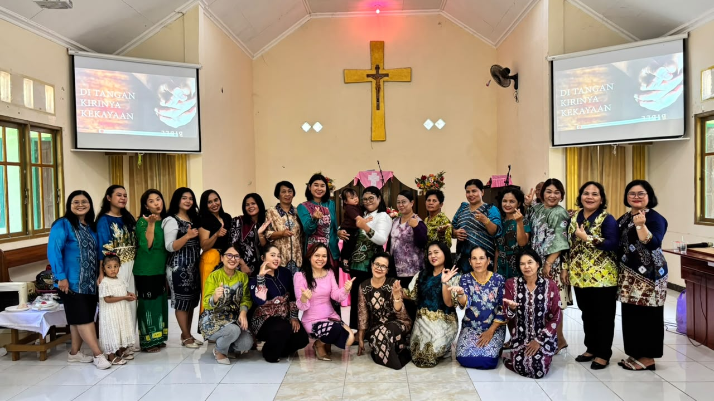
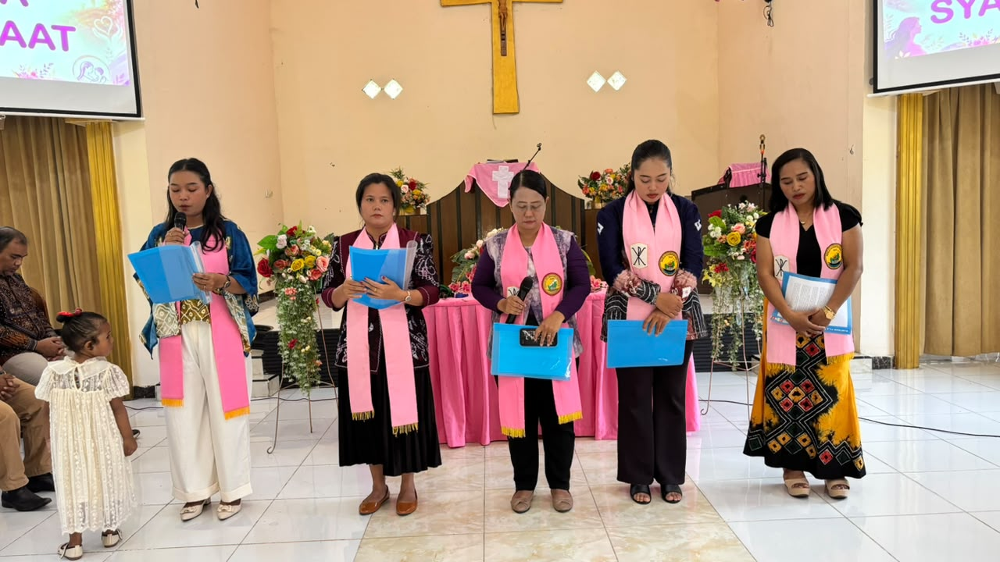
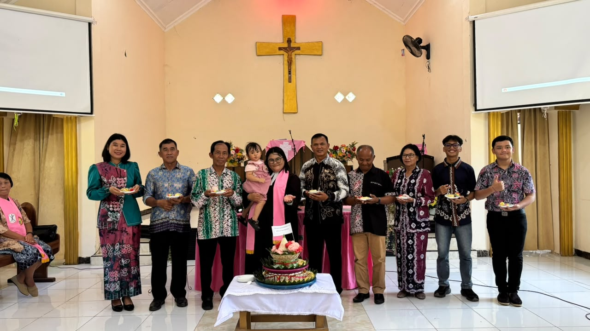
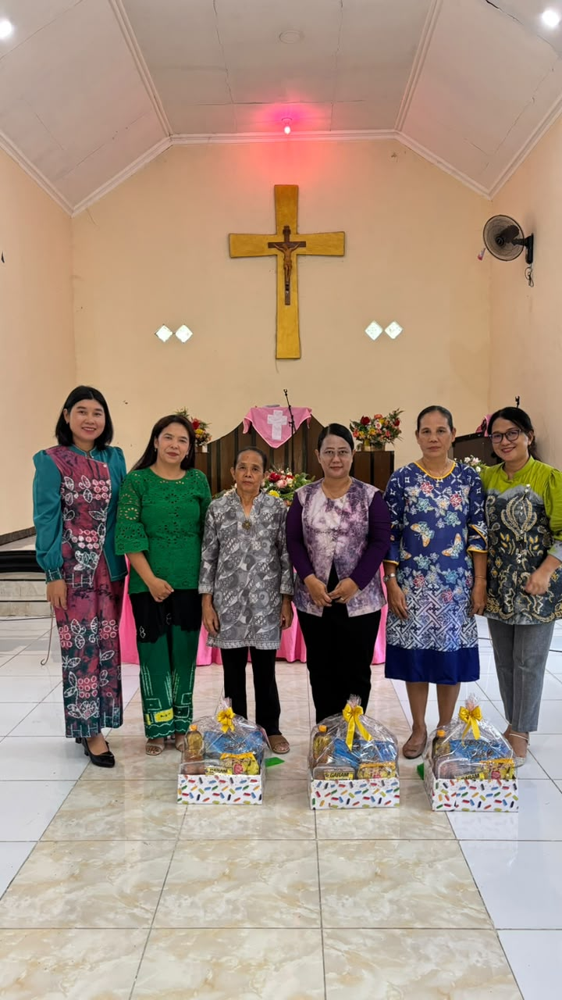
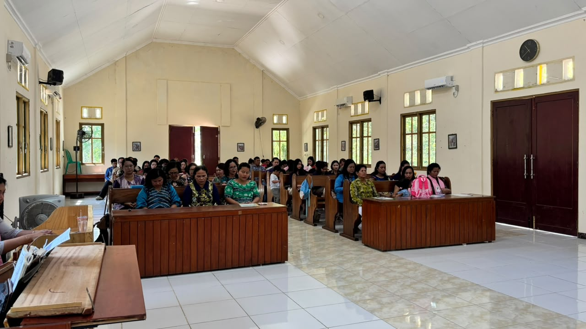

Pembacaan Alkitab:
Ibadah Khusus dalam rangka Perayaan Hari Perempuan GKE.
Pembacaan Alkitab:
Pembacaan Alkitab:
| Hari / Tanggal | Waktu | Tempat / Kediaman | Petugas Pelayan |
|---|---|---|---|
| Sabtu, 04 Juli 2026 | 17:00 WITA | Kel. Citra Hapsari Tuhan Memberkati Keluarga! | Pdt. Siska P. / Dkn. Robert Tambing |
| Sabtu, 18 Juli 2026 | 17:00 WITA | Kel. Ath. Sibarani Rumah Tangga Bahagia! | Pdt. Siska P. / Pnt. RK Bangun |
| Hari / Tanggal | Waktu | Petugas |
|---|---|---|
| Minggu, 05 Juli 2026 | 16:30 WITA | Pendeta / Ny. |
| Minggu, 19 Juli 2026 | 16:30 WITA | - |
| Hari / Tanggal | Waktu | Tempat | Petugas |
|---|---|---|---|
| Minggu, 26 Juli 2026 | 17:00 WITA | Pastori | Pdt. Siska P. / - |
| Waktu | Tempat Pelaksanaan | Petugas |
|---|---|---|
| Setiap Hari Minggu | Gedung Gereja Oikumene Alfa & Omega Yonif 621/Mtg | Guru SHM |
| Tanggal Ibadah | Pengkhotbah (P) | Liturgos (L) | Keterangan Petugas |
|---|---|---|---|
| 5 Juli 2026 | Pdt. Siska Pingamiani, S.Th | Dkn. Kristina Sihaloho | Liturgos |
| 12 Juli 2026 | Pdt. Siska Pingamiani, S.Th | Pnt. Damaris Bubun | Petugas SPPER |
| 19 Juli 2026 | Pdt. Siska Pingamiani, S.Th | Pnt. Cosmos Sembiring | Anak dibantu Majelis |
| 26 Juli 2026 | Pdt. Siska Pingamiani, S.Th | Dkn. Robert Tambing | Liturgos |
Gereja Kalimantan Evangelis (GKE) adalah salah satu organisasi gereja Kristen Protestan tertua dan terbesar di pulau Kalimantan. Cikal bakal berdirinya GKE ditandai dengan bersandarnya para misionaris perdana utusan dari Rheinische Missionsgesellschaft (RMG) Jerman pada tanggal 10 April 1835.
Pada masa awal pergerakannya, badan ini dinamakan Gereja Dayak Evangelis (GDE). Namun seiring berjalannya pelayanan jemaat yang berkembang luas melintasi batas geografis wilayah Kalimantan Barat, Tengah, Selatan, hingga Timur, nama persekutuan resmi diubah menjadi Gereja Kalimantan Evangelis.
Saat ini, terkhusus bagi GKE Barabai, gereja terus aktif berkomitmen menghadirkan buah kedamaian, wadah perwujudan kasih, serta memberikan dampak kebaikan rohani yang nyata bagi seluruh lapisan masyarakat jemaat di lingkungannya.
Kami membuka Portal Berkat bagi anda yang yang ingin Memberkati Pelayanan, Silahkan kirim ke ... Silahkan lapor ke Bendahara: ...
Tuhan Membalas Kebaikanmu dengan Berlimpah! - Lukas 6:38

Kebersamaan dan sukacita pelayanan kaum perempuan SPPER GKE Barabai di altar gereja.

Para petugas liturgos dari seksi SPPER yang melayani ibadah khusus dengan hikmat.

Pemotongan tumpeng bersama pendeta dan majelis jemaat dalam momentum ucapan syukur.

Penyerahan bingkisan kasih sebagai wujud kepedulian nyata persekutuan perempuan.

Suasana ruang utama gereja yang dipenuhi jemaat yang beribadah bersama dengan tertib.